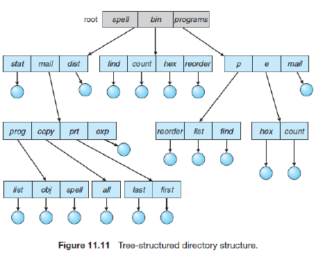
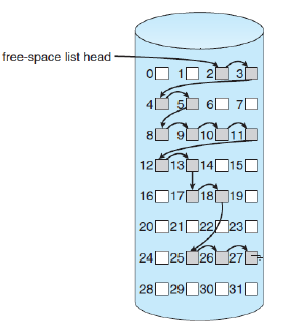

So that the computer system will be convenient to use, the operating system provides a uniform logical view of stored information. The operating system abstracts from the physical properties of its storage devices to define a logical storage unit, the file. Files are mapped by the operating system onto physical devices.
A file is an abstract data type. To define a file properly, we need to consider the operations that can be performed on files. The operating system can provide system calls to create, write, read, reposition, delete, and truncate files.
Also, Files store information. When it is used, this information must be accessed and read into computer memory. The information in the file can be accessed in several ways -
The directory can be viewed as a symbol table that translates file names into their directory entries. If we take such a view, we see that the directory itself can be organized in many ways. The organization must allow us to insert entries, to delete entries, to search for a named entry, and to list all the entries in the directory. In this section, we examine several schemes for defining the logical structure of the directory system. Most directories are tree structured. - A directory has a collection of subdirectories.
Acyclic graph directories - Consider two programmers who are working on a joint project. The files associated with that project can be stored in a subdirectory, separating them from other projects and files of the two programmers. But since both programmers are equally responsible for the project, both want the subdirectory to be in their own directories. In this situation, the common subdirectory should be shared. A shared directory or file exists in the file system in two (or more) places at once.
The file system resides permanently on secondary storage, which is designed to hold a large amount of data permanently. The most common secondary-storage medium is the disk. We explore ways to structure file use, to allocate disk space, to recover freed space, to track the locations of data, and to interface other parts of the operating system to secondary storage. Performance issues are also considered. Physical disks may be segmented into partitions to control media use and to allow multiple, possibly varying, file systems on a single spindle. These file systems are mounted onto a logical file system architecture to make them available for use. File systems are often implemented in a layered or modular structure. The lower levels deal with the physical properties of storage devices. Upper levels deal with symbolic file names and logical properties of files. Intermediate levels map the logical file concepts into physical device properties. Any file-system type can have different structures and algorithms. A VFS layer allows the upper layers to deal with each file-system type uniformly. Even remote file systems can be integrated into the system’s directory structure and acted on by standard system calls via the VFS interface. The second layer is called the virtual file system (VFS) layer. The VFS layer serves two important functions:
The efficiency of the file system depends on the allocation method we use, as it decides the access method as well, among other factors. Thus the file system makes use of contiguous, linked or indexed allocation, more explained in demos.
Since disk space is limited, we need to reuse the space from deleted files for new files, if possible. (Write-once optical disks allow only one write to any given sector, and thus reuse is not physically possible.) To keep track of free disk space, the system maintains a free-space list. Free-space allocation methods also influence the efficiency of disk-space use, the performance of the file system, and the reliability of secondary storage. The methods used include bit vectors and linked lists. Optimizations include grouping, counting, and the FAT, which places the linked list in one contiguous area.
